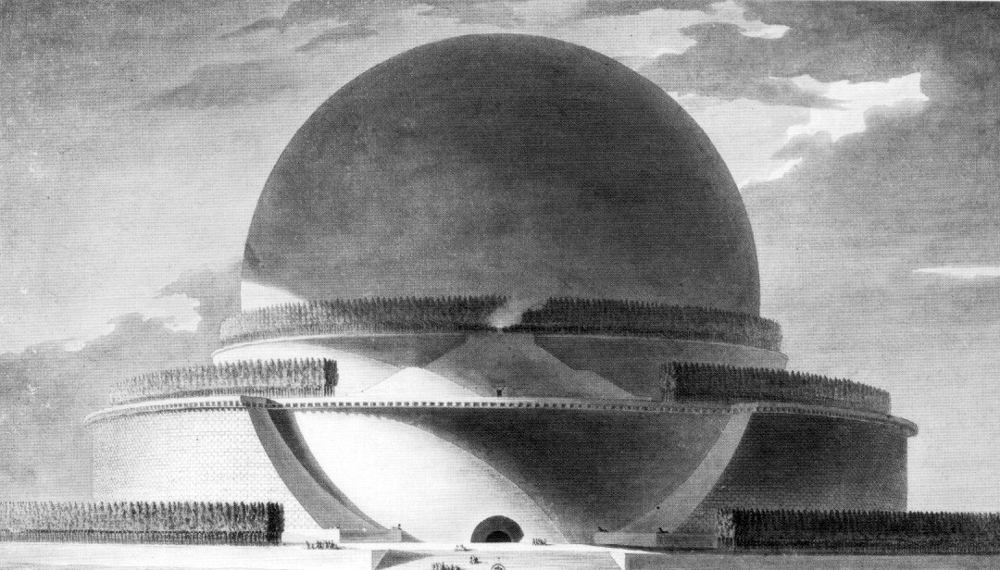

Cenotafio di Newton di giorno
Cenotafio di Newton di notte
Descrizione
L’apertura nel 1743 della scuola d’Architettura in Rue de la Harpe a Parigi è un momento fondamentale per la successiva nascita dell’Architettura Rivoluzionaria.
J.F. Blondel, professore della scuola oltre che architetto visionario, si circondò di una serie di giovani promesse, suoi adepti fra cui Boullée e Ledoux.
Essi recuperarono la razionalità classica progettando edifici monumentali dalle forme geometriche pure ed essenziali.
Spesso però questi edifici avevano solo un carattere simbolico e gli aspetti legati alle tecniche costruttive vennero messi da parte,
tanto che risultarono irrealizzabili.
Il Cenotafio di Newton è un monumento ideato nel 1784, per celebrare la fama e le scoperte del grande fisico inglese.
Le sue caratteristiche avevano il significato di presentare il cosmo come un oggetto sferico, ossia la forma più semplice e regolare dei solidi.
Questa sfera, alta oltre 150 metri, doveva posarsi su di una base cilindrica attorniata d'alberi, e al suo interno si trovava un astrolabio.
L'astrolabio luminoso, sopseso al centro dell'edificio, avrebbe illuminato la cavità interna durante la notte, imitando la luce del Sole; di giorno invece, il Sole sarebbe filtrato attraverso piccole aperture sulla calotta
in modo da simulare le costellazioni.
Quest'opera doveva esporre il ritmo che aveva l'universo e l'influenza che il cosmo stesso aveva sulla terra, dunque il susseguirsi delle stagioni, dei giorni etc...
Video presentazione